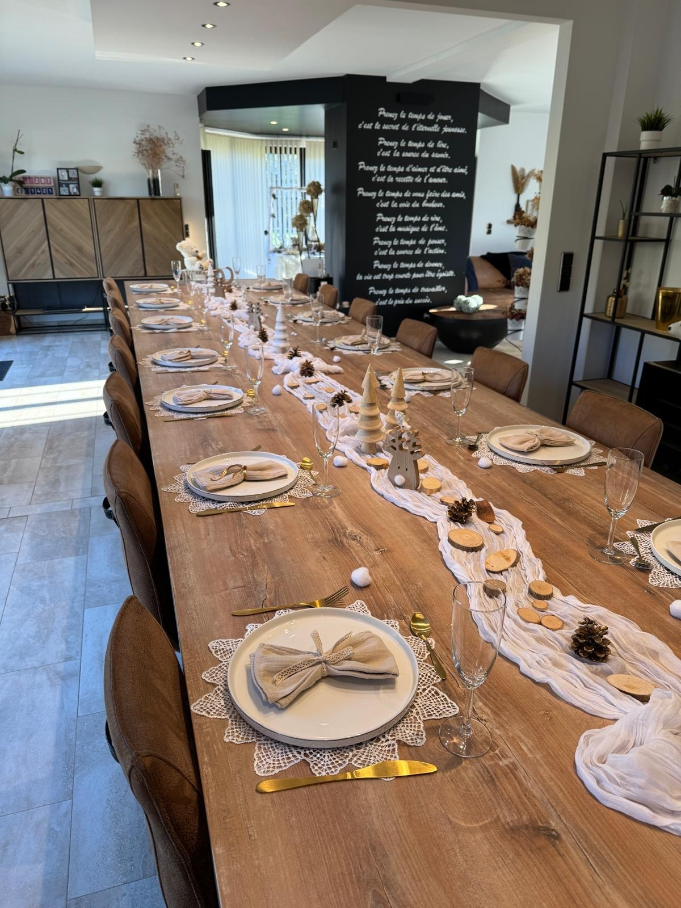

Tables Thématiques & Décors
L'art de sublimer vos réceptions à travers des scénographies d'exception.

Un catalogue exclusif d'éléments d'écrin
Pour que l'atmosphère de votre événement marque les esprits, nous mettons à votre disposition un assortiment rigoureusement sélectionné de vaisselle fine, de verrerie élégante, de linges de table de qualité et d'objets décoratifs uniques. Du style warm minimalist au raffinement le plus classique, notre matériel s'adapte à toutes vos envies thématiques.
Nous renouvelons constamment nos pièces pour vous proposer des compositions modernes, harmonieuses et parfaitement soignées.
Une mise en place professionnelle et millimétrée
Ne vous souciez plus de l'installation le jour de votre fête. Notre équipe se déplace sur le lieu de votre événement en Belgique pour orchestrer et réaliser l'agencement complet de vos tables décoratives. Nous veillons à l'alignement parfait de chaque élément, à l'harmonie des drapés et à l'intégration subtile de la décoration florale ou lumineuse.
Nous donnons vie à la scénographie imaginée ensemble pour que vous n'ayez plus qu'à accueillir vos convives dans un décor enchanteur.
Discuter de votre décoration